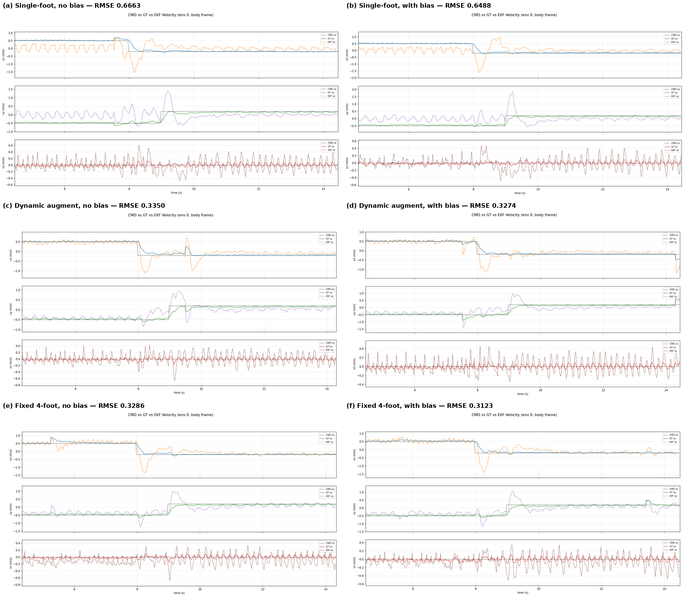

Estimating quadruped velocity by combining inertial measurements and foot contacts. Six filter variants explore how contact representation and IMU bias modeling change estimation performance.
The project compares right-invariant EKF configurations on a Unitree Go2 in Isaac Lab. Contact parameterization and online IMU bias estimation define the six variants.
Representing foot contacts
Single-foot anchor
Track one front-left foot anchor as a minimal baseline.
Dynamic augmentation
Add contact states at touchdown and marginalize them at liftoff.
Fixed four-foot state
Keep all four anchors in the state, retaining a constant covariance size.
Modeling IMU bias
Each contact representation is tested with and without online gyroscope and accelerometer bias estimation.
Evaluation environment
Isaac Lab 0.54.2 with Isaac Sim 5.1.0. The repository reports verification on DGX Spark (Linux aarch64) and Windows x86_64.
Simulation results
Velocity error by filter configuration
All variants use the same command sequence and a 10-second metric window. The fixed four-foot configuration with bias estimation has the lowest reported 3D RMSE.
Velocity RMSE in m/s, reproduced from the linked project repository.
Contact representation
Bias estimation
vₓ
vᵧ
vz
3D RMSE
Single-foot
No
0.4686
0.4465
0.1582
0.6663
Single-foot
Yes
0.4564
0.4418
0.1318
0.6488
Dynamic contacts
No
0.2156
0.2182
0.1346
0.3350
Dynamic contacts
Yes
0.1921
0.2310
0.1300
0.3274
Fixed four-foot
No
0.2159
0.2008
0.1451
0.3286
Fixed four-foot
Yes
0.2074
0.1949
0.1287
0.3123

Commanded, ground-truth and estimated velocity for the six configurations. Figure from the project repository.
What the results suggest
Four-foot and single-foot estimates
Multiple feet improve coverage
The multi-foot variants roughly halve 3D RMSE relative to the single-foot baseline in this experiment. More feet provide observations through contact switching during trot gait.
Bias benefits depend on the setting
Bias estimation brings a modest improvement in these simulations, where the simulated IMU has no true bias. These results do not establish real-hardware performance; the balance may change with sensor bias and noise.
Touchdown impacts remain a source of vertical velocity error across the tested variants.
R. Hartley et al., “Contact-Aided Invariant Extended Kalman Filtering for Robot State Estimation,” International Journal of Robotics Research, 39(4), 2020.